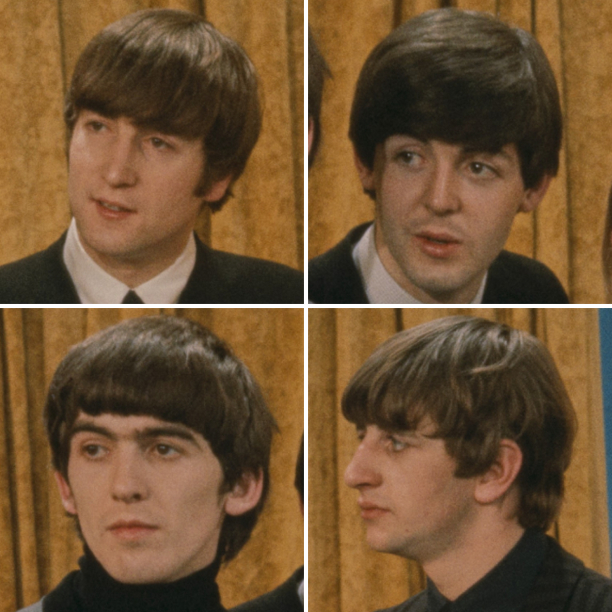

The Beatles are the most commercially successful and artistically influential band in the history of popular music.
The story of how four teenagers from Liverpool got there is more complicated than most retellings let on.

Table of Contents
- Before Beatlemania: Hamburg and the Cavern Club
- The Sound: Where It Came From
- The Touring Years: 1963 to 1966
- When They Stopped Touring and Changed Recording Forever
- Essential Songs on This Site
- FAQ
Before Beatlemania: How The Beatles Were Actually Formed
The Quarrymen Years
The Beatles didn't begin as the band the world would come to know.
John Lennon formed a skiffle group called the Quarrymen at Quarry Bank High School in Liverpool in 1956.
Paul McCartney joined in July 1957, after Lennon's bandmate introduced them at a church fete performance.
George Harrison joined in February 1958, though Lennon initially thought the 14 year old was too young.
The band drifted through several names, including Johnny and the Moondogs and The Silver Beetles, before settling on The Beatles in 1960.
Ringo Starr replaced original drummer Pete Best in August 1962, completing the four piece lineup the world would come to know.
Hamburg: Where The Beatles Became a Real Band
The turning point most casual music fans don't know about is Hamburg.
Between 1960 and 1962, the band completed several residencies in West Germany.
They played grueling sets of six to eight hours a night in the clubs of the Reeperbahn district.
The first Hamburg trip in August 1960 ended in chaos.
George Harrison was deported for being underage.
Paul McCartney and Pete Best were expelled separately after a fire at their lodgings.
They returned to Liverpool, as one historian put it, "defeated but musically transformed."
The patchy teenage skiffle group that had left was now a tight, hard playing rock and roll band.
They had the stamina and instincts of seasoned professionals.
From February 1961 to August 1963, they would play the Cavern Club in Liverpool 292 times.
The Hamburg residencies are the real reason the band could handle overnight fame when it came.
The Sound: American Music Heard From Across the Atlantic
The Beatles built their early sound on a deep love of American music.
Most of their American peers had already moved on from it.
Lennon and McCartney had worn these records out on cheap turntables in Liverpool:
- Chuck Berry
- Muddy Waters
- Little Richard
- The Everly Brothers
- Motown vocal groups
That mix filtered through the Merseybeat scene's chiming guitars and close harmonies.
What they sent back to America in 1964 sounded simultaneously familiar and completely new to American ears.
It was American music rearranged by people who'd loved it from a distance.
Lennon and McCartney: The Songwriting Partnership
The Lennon-McCartney songwriting partnership is the most productive in the history of popular music.
Their early collaboration was intensely competitive.
Each man pushed the other to sharpen, simplify, or strengthen whatever the other had written.
By the mid-1960s their styles had diverged significantly.
Lennon gravitated toward abrasive, confessional lyric writing, while McCartney leaned toward melodic sophistication and structural craft.
The Touring Years: Beatlemania and Its Limits
Their Ed Sullivan Show appearance on February 9, 1964 drew an estimated 73 million viewers.
It was the largest US television audience recorded up to that point.
"I Want to Hold Your Hand" had already reached number one on the Billboard Hot 100 two weeks earlier, on January 25.
Between 1963 and 1966, the band toured almost continuously through the UK, the US, and the rest of the world.
By 1966, screaming crowds had become so loud the band could no longer hear themselves play.
Their last commercial concert was at Candlestick Park in San Francisco on August 29, 1966.
They never toured again.
When The Beatles Stopped Touring and Changed Recording Forever
Quitting touring was not a retreat.
It was the decision that produced the most creatively significant run of albums in rock history.
Revolver: The First Studio Revolution
With the pressure of constant live performance removed, the band and producer George Martin began treating Abbey Road Studios as a laboratory.
Revolver (1966) was the first result, built from techniques no major pop act had used before:
- Reversed tapes
- Artificial double tracking
- Varispeeding
- Close microphone placement on drums and bass
- Indian classical instrumentation alongside standard rock instrumentation
Engineer Geoff Emerick, then just 20 years old, ran Lennon's voice through a rotating Leslie speaker.
That achieved the sound Lennon described as "the Dalai Lama singing from a mountain top."
Sgt. Pepper and Abbey Road: Taking It Further
Sgt. Pepper's Lonely Hearts Club Band (1967) continued every experiment Revolver had started, this time without a fixed deadline.
"Strawberry Fields Forever," released as a single in the same period, pushed the studio experiments further still.
Producers spliced together two takes recorded in different keys and tempos, then slowed one and sped up the other until the pitches matched.
That technique had never been used in popular music before.
By the time Abbey Road (1969) was recorded, the band was fracturing.
Even so, the musicianship and studio craft on its two sides remain a benchmark.
Subsequent rock records have been measured against it ever since.
Essential Songs on 1960smusic.net
- She Loves You (1963): the yeah-yeah-yeah single that made Beatlemania a household word in the UK.
- I Want to Hold Your Hand (1963): the song that triggered the British Invasion in America.
- Please Please Me (1963): the single that first topped a UK chart and launched everything that followed.
FAQ
When did The Beatles form?
The Beatles formed in Liverpool in 1960, evolving from John Lennon's 1956 skiffle group the Quarrymen.
The classic lineup was complete in August 1962 when Ringo Starr replaced original drummer Pete Best.
Where were they from?
They were from Liverpool, England.
All four members grew up in the city and honed their skills in its Merseybeat club scene and during residencies in Hamburg, Germany.
Why did they stop touring?
They played their last commercial concert at Candlestick Park in San Francisco on August 29, 1966.
Live audiences had grown so loud the band could no longer hear themselves play.
Stopping touring freed them to focus entirely on studio recording.
What made them so influential?
They combined commercial instinct with genuine studio innovation.
Their early records proved British acts could dominate American charts.
Revolver and Sgt. Pepper then expanded what a rock record could sound like, shaping how albums were made for decades afterward.
What genre were they?
They are primarily associated with the British Invasion and Merseybeat.
Their music also spans pop, psychedelic rock, folk rock, and experimental art rock, and that refusal to stay in one genre is part of why their influence spread so widely.
They were the band that opened the door for the entire British Invasion & Beat Music movement.
Start with She Loves You to hear the single that first defined their sound for UK audiences.
Or try I Want to Hold Your Hand, the song that started it all in America.
Back to the 1960smusic.net homepage to explore every genre The Beatles helped shape.